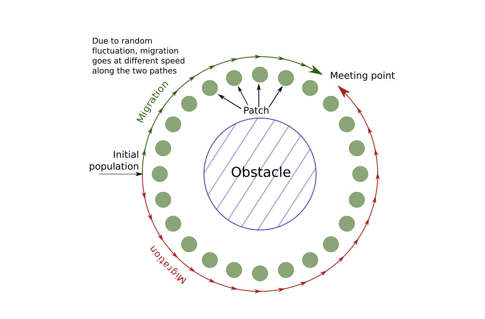
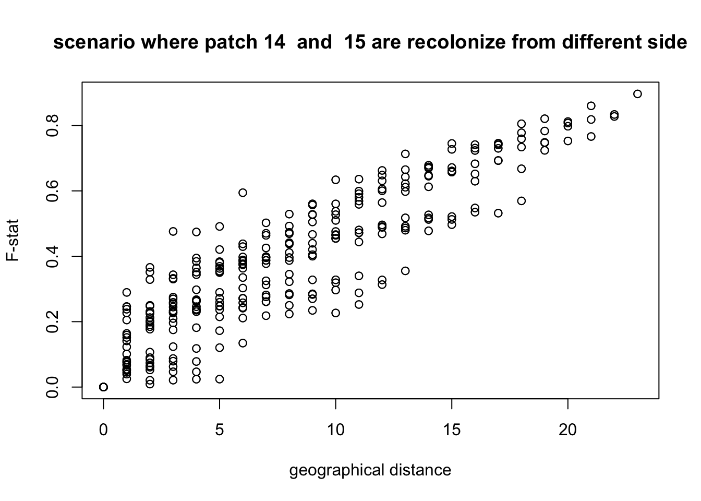
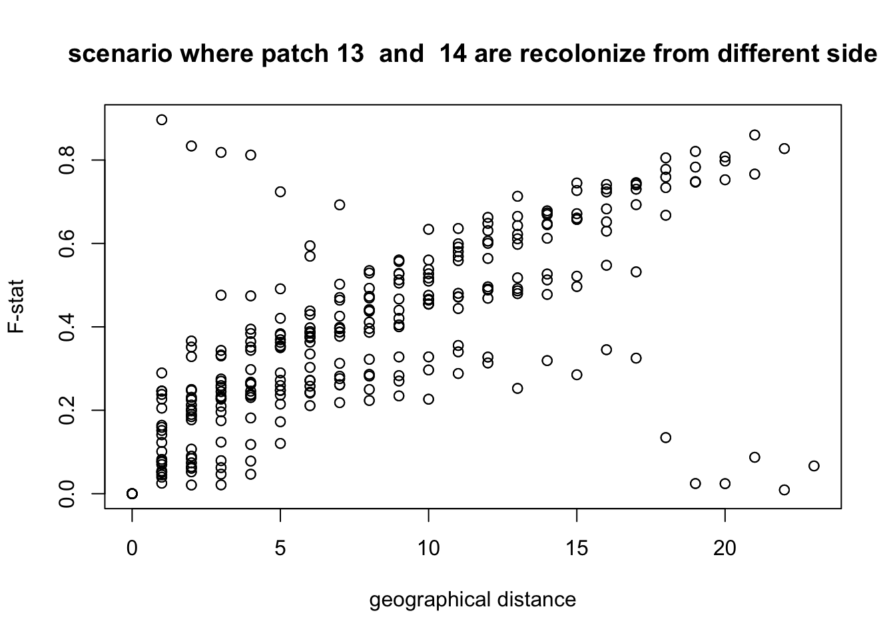

Coalescence
Some first note
In the first three tutorials, we limited ourself to forward-in-time simulations. Since this type of simulation is individual-based, it generates the genotype of each individual at each generation. This is very useful to perform selection, since the fitness of all individuals is always known, and allows to track the genetic state of the population at any time. However, simulating the genotype of each individual is very costly in terms of CPU time and memory and not necessary in some cases.
Another approach is to only simulate the meta-population as a whole, saving only the number of individuals at each generation. This method is called population-based simulation. However, this gives no information about the genetic diversity in the population. To rebuild this information, QuantiNemo uses coalescence. Coalescence is a backward-in-time algorithm, starting from the current generation and randomly building back the lineage of each gene. The advantage of this approach is that only the genes which are present in the final generation should be tracked, living after a few generations only a few lineages to follow. In conclusion, what quantiNemo does if we use the coalescence mode is to first build a demographical scenario using population-based, forward-in-time simulation and then to build the genetic diversity using a backward-in-time simulation using a coalescence approach.
This method is therefore much faster. However, it comes at an expensive cost. First, it only allows to simulate neutral genetic. Secondly, only the genome of the last generation is generated. These two drawbacks are tightly bound to the algorithm and cannot be overcome (at least in standard coalescence simulation). For practical reason, quantiNemo also forbid the simulation of linked loci. This is something specific to quantiNemo and other coalescence software allow to simulate linkage.
Despite these limitations, coalescence algorithms are very useful in one common situation, that is when we observed a genetic diversity in a living species, and we want to learn something from this diversity. Indeed, most of the markers that we would get by sequencing the genome of a species are neutral, and for most species, markers under selection are anyways not known. So in this situation, the fact that selection cannot be simulated is not a problem. Secondly, we only have the current genetic diversity of our population, so the fact that coalescence can only give us the genotype of the last generation is not a problem neither. In conclusion, coalescence is the tool of choice to compare an observed genetic diversity in some species to what we should expect from theoretical model. Using various types of statistical tools, it’s for example possible to test hypotheses about the demographical scenario.
Isolation by distance
Here, since we don’t have any genetic data, we will rather explore what is called isolation by distance. In isolation by distance, the genetic distance between two populations increases as the geographical distance increase. To make things a bit more interesting, we will try to see if we can guess how a colonizing scenario went just looking at the genetic data, and check from some output if our guess was correct or not.
In isolation by distance, a genetic distance between two populations is generated through a physical distance. In the scenario that we will simulate, we will imagine that a new species appears or migrate close to a big lake, a sea or any obstacle. The species will migrate around the obstacle, following a 1-D stepping stone model. Since the migration on both sides depends on stochastic events, the meta-population will not colonize both sides at the same pace. If we wait long enough, the two populations will eventually reach each other. The question that will be of interest in this tutorial is can we guess where the population migrating clockwise around the obstacle met the population migrating counter-clockwise. In the following picture, we show a graphical representation of the situation:

First, we will setup the demographical scenario. We will set 24 patches arround the obstacle. At the beggining, individuals will only be present on one patch. Moreover, we expect the population to grow following a logistic model, with a maximum fertility of \(1.5\) per individual (we simulate hermaphrodite). Alltogheterh, our file look like this:
generations 1250
patch_number 24
patch_capacity 1000
patch_ini_size{1000 0 0 0 0 0 0 0 0 0 0 0 0 0 0 0 0 0 0 0 0 0 0 0}
mating_nb_offspring_model 8 #logisitc growth growth_rate 0.5 dispersal_model 2 # 1-D stepping-stone model
dispersal_rate 0.00005 #on average, we have one migrant every 20 generation from a fully colonized patch
Question Which of these parameters tell us that we will colonize all patches in a round-about way. Which parameter about the migration model is omitted since its default value is already what we want?
Then we have to set the genetic part of the simulation. We don’t need anything fancy here and will just specify 200 neutral loci. Note that having 200 loci instead of just one allows to obtain distribution and average for all the quantity related to the genotype of the individual without performing various replicate. If we want to see diversity, we have to set some mutation. Here, we will set it to a - not very realistic - high value to have a high diversity.
ntrl_loci 1000
ntrl_mutation_rate 1e-5
Question Why didn’t we set the initial genotype of the population? What will quantiNemo do? Hint: it will not use the parameter ntrl_ini_allele_model
Now, we turn to what we want to observe. One of the measures of the genetic distance between population is the F-statistic. QuantiNemo can compute them directly. Since we eventually want to check if guess correctly at which patch individuals met, we should also save the population sizes. Note that, despite the fact that most statistic cannot be computed at every generation in the coalescence mode, the demography can still be saved since it is generated in a forward-in-time manner:
stat {n.adlt.fst_pair}
coalescence_save_pop_sizes 1
More importantly, we want to use the coalescence mode. In quantiNemo, this is done by just setting one parameter to one:
coalescence 1
Finally, to have the same result as we do and to be able to use our script, we define some general information:
folder coalescence seed 127
You can now save this input file and run the simulation with quantiNemo.
Question How much longer is it to simulate the same scenario but not using coalescence? Set the parameter coalescence to 0 and try it for yourself.
To make a guess about the patch at which the population met again, we will plot the F-statistic of neighbor patches. In most cases, we expect that the F-stat will be rather low. However, in the patch where the two population meet, we expect them to be very different and so to see a pick in the F-statistic. To have a clearer idea, we will not only plot the first neighbor but also the second and the third neighbor. Notice that in this case, we cross twice or three times the barrier, so we expect to have not only one high point but two, resp. three.
#first, we load the statistic
stat = read.table("coalescence/simulation_stats.txt",header = T)
#We introduce in the matrix Fst all the
# F-stat between patch i and j
Fst <- matrix(0,nrow = 24, ncol = 24)
for(i in 1:23){
for(j in (i+1):24){
Fst[i,j] = head(stat[[paste("n.adlt.fst_p",formatC(i,width = 2,flag="0"),".",formatC(j,width = 2,flag="0"),sep = "")]],1)
Fst[j,i] = head(stat[[paste("n.adlt.fst_p",formatC(i,width = 2,flag="0"),".",formatC(j,width = 2,flag="0"),sep = "")]],1)
}
}
#d1 contain the genetic distance between patch i and patch i+1 for all i
#d2 contain the genetic distance between patch i and patch i+2
d1 <- vector("numeric",24)
d2 <- d1
d3 <- d1
for(patch in 1:24){
d1[patch] <- Fst[patch,patch%%24+1]
d2[patch] <- Fst[patch,(patch+1)%%24+1]
d3[patch] <- Fst[patch,(patch+2)%%24+1]
}
plot(1:24,d1,col="red",type = "l",ylim = c(0,1),ylab = "F-stat",xlab = "patch_number")
lines(1:24,d2,col="blue")
lines(1:24,d3,col="green")
legend("topleft", c("first neighbor", "second neighbor", "third neighbor"),lty = c(1,1,1),col=c("red","blue","green"))
From this plot, it seems pretty obvious that the two population meet between patch 14 and 15. To further test this hypothesis, we can plot the F-statistic as a function of the physical distance, making the hypothesis that individual cannot cross the frontier between patch 14 and 15 so that they are at a distance of 23 patches.
compute.coordinate <- function(split.position,coordinate){#compute the coordinate on the "adapted map"
if(coordinate <= split.position) coordinate <- coordinate + 24 #split is between split.position and split.position +1
return(coordinate)
}
compute.all.distance <- function(split.position){
Dxy <- matrix(0,nrow = 24,ncol = 24)
for(i in 1:23){
for(j in (i+1):24){
Dxy[i,j] <- abs(compute.coordinate(split.position ,i)-compute.coordinate(split.position ,j))
Dxy[j,i] <- abs(compute.coordinate(split.position ,i)-compute.coordinate(split.position ,j))
}
}
return(Dxy)
}
split.position=14
Dxy <- compute.all.distance(split.position = split.position)
plot(Dxy,Fst,xlab = "geographical distance", ylab = "F-stat",main = paste("scenario where patch",split.position," and ", (split.position)%%24+1,"are recolonize from different side" ))We clearly see that the physical distance is correlated to the genetic distance. If now we plot it with a different hypothesis, for example that individual did not cross the fronteer between patch 13 and 14, what do we get?
split.position=13
Dxy <- compute.all.distance(split.position = split.position)
plot(Dxy,Fst,xlab = "geographical distance", ylab = "F-stat",main = paste("scenario where patch",split.position," and ", (split.position)%%24+1,"are recolonize from different side" )) We see that with this hypothesis, some points are clearly not in the correct position. This confirm what we already saw.
In general, it is possible to verify if the correlation between geographical distance and genetic distance is significant thanks to a Mantel test. Here, we use the package ade4 to perform such a test, and we see that the p-value is highly significant, meaning that we do observe isolation by distance.
Dxy <- compute.all.distance(split.position = 14)
library(ade4)
mantel.randtest(as.dist(Dxy),as.dist(Fst),nrepet = 1000)## Monte-Carlo test
## Call: mantel.randtest(m1 = as.dist(Dxy), m2 = as.dist(Fst), nrepet = 1000)
##
## Observation: 0.8898093
##
## Based on 1000 replicates
## Simulated p-value: 0.000999001
## Alternative hypothesis: greater
##
## Std.Obs Expectation Variance
## 11.999639713 0.004825053 0.005439196Now that we are confident about where the two population met, we can check from the simulation output if our guess was correct. Here, we just show at what time each patch was colonized (i.e. has more than 100 individual).
pop <- read.table("coalescence/simulation.txt",header = T)
colonization.time = vector("numeric",24)
names(colonization.time) <- 1:24
for(i in 1:24){
colonization.time[i] = min(which(pop[,i+1]>100))
}
colonization.time## 1 2 3 4 5 6 7 8 9 10 11 12 13 14 15
## 1 121 155 313 397 446 557 715 756 827 937 1059 1143 1221 1211
## 16 17 18 19 20 21 22 23 24
## 1012 909 717 388 302 181 144 112 74We see that the last patch which is colonized is the patch 14 (at generation 1221). It is likely that it was colonized through patch 13 since patch 14 was just colonized 10 generations before(1211), and so it’s likely that it didn’t have a large enough population to send immigrant. In conclusion, we were able to correctly guess an important fact about our demographical scenario just by looking at the current genetic information of the meta-population.
Question How does the F-statistic evolve with time from here? Try to set the number of generation to 10’000, and check if the result is very different.
Question Doing a simulation for 10’000 simulation is not really longer than for 1000 generation. Why is that? Would it be the same in forward in time simulation?